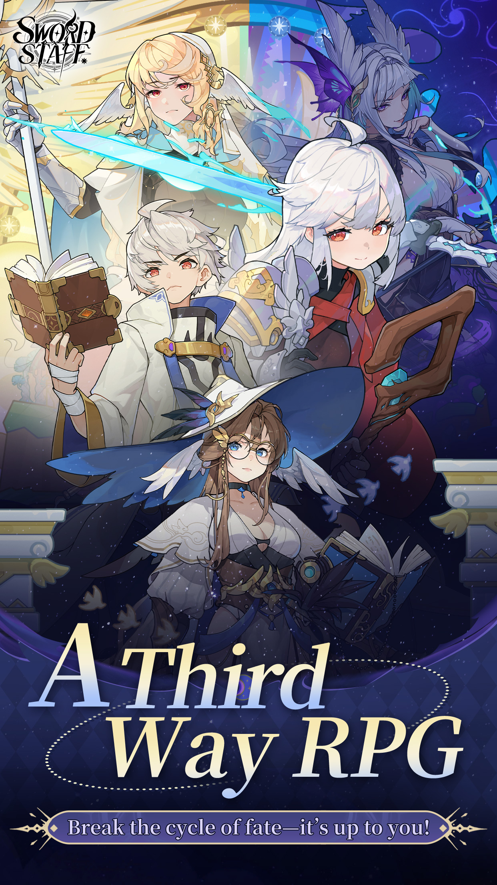

1. Tân Thủ, Căn Cứ & 30 Code2. Công Thức & Skill Ascend3. Chọn Nghề & Đổi Lớp Lv.1004. Hồ Sơ Kiếm Công (Bậc 1→7)5. Hồ Sơ Khiên Thủ (Hiệp Sĩ)6. Hồ Sơ Trượng Công (Bậc 1→7)7. Hồ Sơ Hiền Giả & Bí Thuật8. Bộ Build Meta 4 Chế Độ9. Trang Bị, Đá Thần Tạo & Ngọc10. Cổ Vật & 12 Huyễn Thú11. Tiểu Sử 13 NPC, Collab & Món12. Chu Kỳ 8+7n, Bingo N15 & Reset13. Xâm Lăng Hỗn Mang (Full)14. Bản Đồ Kanstein & Co-op

1. Triết Lý Gameplay, Khóa Server & Quyết Định Reroll
- Third Way RPG & AI Chiến Đấu Thích Ứng: Khác với game nhàn rỗi đứng yên một chỗ, nhân vật trong Sword x Staff tự di chuyển chọn vị trí, đoán hướng địch, truy đuổi mục tiêu và xoay chuỗi 4 Chiến Kỹ + 4 Bí Thuật từ hơn 200 kỹ năng phối hợp. Mỗi Avatar đều tùy biến độc bản 100% không trùng khuôn mặt.
- Mốc 100% Đảo Khởi Nguyên & Rủi Ro Khóa Server: Phải hoàn thành 100% hướng dẫn Originisle mới mở Hòm Thư nhận Code. Máy chủ mới đầy rất nhanh và khóa tạo nhân vật — nếu đi cùng bạn bè hoặc Bang Hội, vào giữ chỗ ngay, tuyệt đối KHÔNG Reroll! Tuần đầu phát hàng trăm lượt quay và mốc
200 lượttặng sẵn Rương Tự Chọn Kỹ Năng Cam Bậc 1. - Đích ngắm nếu chơi đơn thích Reroll (15–20 phút/vòng): Hệ Trượng nhắm Thuật Rồng Nước (Water Assault) + Khiên Áp Suất Gió (Gale Shield); Hệ Kiếm nhắm Đòn Đập Mạnh (Heavy Impact) + Lưới Xoáy Chém (Whirlwind Slash).
2. Tiến Trình Căn Cứ (Nhà): Xe Đẩy 36h, Giường Ngủ, Gian Hàng & Cõi Vật Chất
- Nhà – Xe Đẩy (Home Cart • Tối đa 36 giờ Offline): Giới hạn cấp tài nguyên phụ thuộc vào Cấp Phước Lành (Blessing Level). Mẹo chuẩn: Nâng TẤT CẢ tài nguyên lên Lv.10 trước, sau đó ưu tiên dồn tối đa cho Gỗ (Wood) và Đá (Stone). Kích hoạt Tượng Nữ Thần (Goddess Statues) và Thẻ Tháng giúp tăng mạnh sản lượng.
- Nhà – Giường Ngủ (Home Bed): Có 1 lượt tăng tốc miễn phí mỗi ngày; ngoài ra dùng Temporal Crystal (Tinh Thể Thời Gian) nhận ngay 2 giờ tài nguyên cho cả Giường lẫn Xe Đẩy. Nhớ mở hết Tượng Nữ Thần trên map trước khi bấm tăng tốc, và tắt thu hoạch nhanh Giường 36h trước giờ Reset Mùa!
- Nhà – Gian Hàng (Vendor Booth • Mở ở Lv.20): Ở quầy thường luôn ưu tiên vét sạch Gỗ, Đá và Cuộn Nhiệm Vụ (Quest Scroll) vì cực kỳ thiếu về sau. Kiểm tra mục Kho Báu (Vault) mỗi ngày để mua giảm giá Tinh Cầu Cầu Nguyện (Stellaties — vé quay kỹ năng, phân biệt với Primostar / Sao Nguyên Thủy!), Búa Sắt (Iron Hammer), Cuốc Vàng (Gold Pickaxe) và Đốt Ngón Tay Mòn (Worn Knuckles).
- Thương Hội Commercium (Lv.40) & Rolla Shop: Lên
Lv.40đi phi thuyền rìa tây Nhà tới Commercium mở Trading House (dùng 48h đầu mở vùng mới bán nguyên liệu nấu ăn thu Dawnium) & Auction House (đấu giá bằng Luminium). Đồng Rolla ưu tiên vét sạch vật tư Xe Hàng mỗi ngày. - Bang Hội (Lv.15) & Cõi Vật Chất (Material Realm): Quyên góp Bang tối đa 5 lần/ngày (1 free + mua thêm 2 lượt chỉ tốn
70 Dawniumnhận Xu Bang, Thép, Kanstein Cell, Mana Cluster). Với Cõi Vật Chất, phần thưởng tăng theo Hạng (Rank) — hãy tích lượt chờ lên Hạng cao mới xả!
3. Sự Kiện Khúc Dạo Đầu Hành Trình (Journey Overture — 14 Ngày Ra Mắt)
- Điểm danh 14 ngày & Quà độc quyền: Tặng miễn phí biểu cảm Salted Splash, vé quay kỹ năng và **2 Di Vật giá trị cao**: Sword × Staff (Phẩm Thần Thoại) + Merri Doll (Phẩm Huyền Thoại).
- Overture Shuffle / Prize Punch & Ngoại Trang: Tham gia lật ô nhận bộ 9 Biểu Cảm đặc biệt và mở khóa trang phục giới hạn Phantom Purr (
499 + 299 Vouchers).
4. FAQ Ra Mắt, Cấu Hình Thiết Bị, Cách Đổi 30 Giftcode & Hoàn Tiền Nạp
- Cấu hình khuyến nghị:
Android 13.0+ / RAM ≥ 4GB (CPU 64-bit)hoặciOS 12+ / iPhone XS trở lên. Nếu chơi PC qua giả lập cần Android 9.0+ 64-bit và cấp tối thiểu 2–4GB RAM. - Đường dẫn nhập 30 Giftcode (Global Boltray + VN/SEA Funtap): Hoàn thành 100% Đảo Khởi Nguyên → bấm
Home > Menu Chính (góc dưới phải) > Trung Tâm Người Dùng (User Center) > Gift Code→ nhận thư tại Chim Cú. Gồm cả cụm mã Quốc Tế (4P7Y2R9M,SXSDCTHANKS,SXSFBTHANKS,ZJ777,SXSREDDIT,SS000,SS777,SS888,SS999,ZJ888,ZJ999...) lẫn cụm mã máy chủ VN/SEA (SUNSPIRE,WELCOME01–WELCOME03,SUPERSKILL,SXSWITHYOU,SXSFACEBOOK,LEVELUPNOW,WORLDOPEN,PETLOVE,NPC2026,LUCKYGACHA,YUMMYVIP) — có nút sao chép 1 chạm tại Mục 1 Trang Chính. - Hoàn Tiền Nạp Thử Nghiệm (Top-Up Rebate): Đăng nhập đúng tài khoản cũ → vào
Home > Thrilling Eventschọn duy nhất 1 nhân vật nhận hoàn trả (không thể hoàn tác sau khi xác nhận; đạt mốc tích lũy mở thêm ngoại trang Eternal Night Ancestor).
